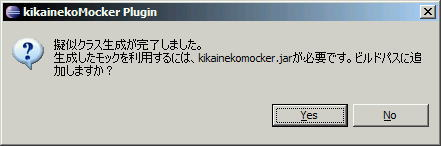
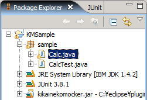

KikainekoMocker
Java
Mock
機械猫モッカー
モック
目次
インストールや使用時にエラーが発生する際は、あわせてこちらをご覧ください。
「機械猫モッカーでエラーになったら」
はじめてみよう
インストール
- 機械猫モッカー・プラグインを download して、zip ファイルを解凍します。
- 解凍したフォルダーを、eclipse の plugins フォルダーに入れます。

これでプラグイン導入完了です。
テスト作成
- プラグインが導入できたら、Eclipse を起動してください。
- ここでは、サンプルとして 「 KMSample 」 というプロジェクトを作成しましょう。
- KMSample に sample パッケージを作成します。
- sample パッケージに CalcTest.java を作成します。
- このCalcTest.javaに、「テスト・コードのサンプル」で例としてあげているテスト・コードを実装します。
- 当然、この段階では Calc クラスは存在しないので、Eclipse はエラーがあることを表示します。


機械猫モッカー実行
- CalcTest.java をちゃんと保存したら、CalcTest.javaを右クリックしてください。
- [機械猫Mocker] - [擬似クラスの生成]を実行してください。
- 次のような警告がでますが、気にせず「はい」を押してください。
（2回目以降は表示されません） - すると、Calc.java が生成されてます。



テスト実行
テスト・コードのサンプル
機械猫モッカーのためのテスト・ケースのサンプル
機械猫モッカーは JUnit のテスト・ケースをパスする擬似クラスを生成します。
例えば、以下のようなテストをパスする擬似クラスを生成できます。
package sample;
import junit.framework.TestCase;
public class CalcTest extends TestCase {
Calc calc;
protected void setUp() throws Exception {
super.setUp();
calc=new Calc();
}
public void testGet(){
assertEquals(0,calc.get(0,0));
}
public void testAdd(){
calc.set("+");
assertEquals(5,calc.get(2,3));
}
public void testAddInteger(){
calc.set("+");
Integer i20=new Integer(20);
Integer i30=new Integer(30);
Integer i50=new Integer(50);
assertEquals(i50,calc.get(i20,i30));
}
public void testMulti(){
calc.set("*");
assertEquals(6,calc.get(2,3));
}
public void testDiv(){
calc.set("/");
assertEquals(2,calc.get(4,2));
}
}
上記の CalcTest を見ると、プリミティブ型やオブジェクト型を操作できることが分かります。
このように機械猫モッカーは任意の型を操作することが可能です。
（ただし、全ての型を安全に操作できるわけではありません。
詳細は「前提・制約事項」を参照してください。）
また、以下のようなテストをパスする擬似クラスを生成することができます。
package sample;
import junit.framework.TestCase;
public class TokenTest extends TestCase {
Token token;
protected void setUp() throws Exception {
super.setUp();
}
public void testNext(){
token=new Token("a=10*c;");
assertEquals("a",token.next());
assertEquals("=",token.next());
assertEquals("10",token.next());
assertEquals("*",token.next());
assertEquals("c",token.next());
assertEquals(";",token.next());
}
public void testLength(){
token=new Token("a=10*c;");
assertEquals("6",token.length());
}
}
TokenTest を見ると、同一メソッドを複数回実行していますが、
機械猫モッカーはこれも問題なく扱えます。
簡易な擬似クラスでは、1メソッドに1つの返り値しか持たせない場合がありますが、
機械猫モッカーは呼び出し順なども考慮して返り値を決定しています。
また、すでに対象となるクラスが存在する場合、 既存のコードをすべてコメント・アウトし、擬似コードを書き込みます。
テスト・コードの書き方
機械猫モッカーは通常のテスト・ケースを解析しますが、いくつかテスト・ケースを書く上での ポイントがあります。 細かい内容に関しては、「前提・制約事項」をいっしょにご覧ください。
サンプル・プログラムを用いて、簡単なポイントを説明します。
擬似クラス対象指定
機械猫モッカーは、擬似化対象クラス、つまりどのクラスを生成するか、の指定を
テスト・ケースのフィールドで判断しています。
必ず擬似化対象クラスを最初のフィールドとして宣言してください。

この場合、機械猫モッカーは Calc の擬似クラスを生成すると判断します。
- 擬似クラスとして生成する対象を最初に宣言してください。
- ここでインスタンス化、null 値代入などはしないでください。
また、ここで「 SomeInterface calc; 」のようにインターフェースを指定すると、 そのインターフェースを実装した擬似クラスを生成します。
あるいは、「 SomeSuperClass calc; 」のようにでスーパークラスを指定すると、 そのスーパークラスを継承した擬似クラスを生成します。
機械猫モッカーが生成する java ファイルは、フィールドが インスタンス化される際の記述を解析し判断します。
例えば、
calc = new Calc();が記述されている場合、機械猫モッカーは、Calc.java を生成すると判断します。
また、DI (Dependency Injection) やファクトリ・メソッドによって インスタンス化(new)が隠蔽されている場合にも、機械猫モッカーは対応しています。
まず機械猫モッカーは、DIやファクトリを実際に実行します。実行に成功し、オブジェクトが返ってきた場合、そのクラス名を取得してそのクラス名の擬似クラスを生成します。
例えば、
HogeInterface hoge; hoge = (HogeInterface)di.getComponent();が記述されているの場合、HogeInterfaceImpl のクラスが生成されます。
メソッドの返り値は、基本的に assertEquals で設定
擬似化対象クラスのメソッドが返り値を持つ場合（つまり void 型じゃない場合）
は、基本的には assertEquals で返り値を指定してください。
（当然ですが、void 型は assertEquals に記述しないでください。）
期待値、実測値の順は特に指定しません。

■不定値の扱い
assertEquals 以外で、例えば、以下のように記述した場合にも、
int i = calc.get(2, 3);その後、その値が assertEquals などで解決される場合、戻り値として判断されます。
calc.set("+");
int i = calc.get(2, 3);
assertEquals(5, i)
不定値を使用するは、以下の点に注意してください。
- 不定値のまま、他のメソッドに引数として渡せません。
- Object型の不定値の場合、解決しなくても良い。 また、そのObjectの操作も可能です。
- finalクラスの不定値は使用できません。
例外を投げるメソッドの記述
擬似化対象クラスのメソッドが例外を投げる場合は、 try / catch / fail を使用して例外を指定してください。
fail() のひとつ前に記述されているメソッドで例外が発生すると判断します。
fail() 後、最初に catch する Exception を throw すると判断します。

この例の場合、calc.set("a") 呼び出し時に、例外 IllegalArgumentException が発生します。
throw する例外はカスタムのものでも指定可能です。
[to top]前提・制約事項
前提事項
機械猫モッカーは Java1.4 の文法に沿った解析を行いますが、 完全ではありません。ここでは細かな差異を示します。
■使用できるデータ型
機械猫モッカーはすべてのプリミティブ型を安全に扱えません。具体的には、以下の型を扱えません。
- float 型（ 8進数表現や16進数表現には対応していません）
テスト・ケース記述に関する制限事項
テスト・ケース記述には以下の制限が課せられています。
これらのうちのいくつかは解消されますが、ご注意ください。
- テスト・ケースには以下の機械猫モッカーの予約語を使用することはできません。 switch, case, default, return, this, synchronized, class
- クラスの変数に、擬似化対象のクラスを必ず宣言してください。この宣言で擬似化対象を判断します。
また、擬似化対象のクラスは、必ず最初のクラスの変数として記述してください。 - 擬似化対象の static メソッドには対応できません。
- 制御構造文の内 switch 文は使用できません。
また、continue句は使用できません。
テキストUIからの実行
通常機械猫モッカーは Eclipse プラグインから実行されることを想定していますが、
テキスト形式から呼び出すことも可能です。
MockMaker クラスを使用します。
具体的には何らかのクラスに以下のmain メソッドを実装して、実行してください。
public static void main(String[] args){
try{
String[] ss={"src\\sample\\SampleTest.java"};
MockMaker.main(ss);
}catch(Throwable t){
t.printStackTrace();
}
}
文字列配列の ss には対象テスト・ファイルのパスを指定してください。（Eclipse プロジェクトからの相対パスです。）
また、MockMaker クラスは、org.kikaineko.mock.textui パッケージに存在します。
Contents
- ホーム
- 何ができるのか
- どのように使うのか
- どのように動いているのか
- ダウンロード
- 機械猫モッカー・デモ